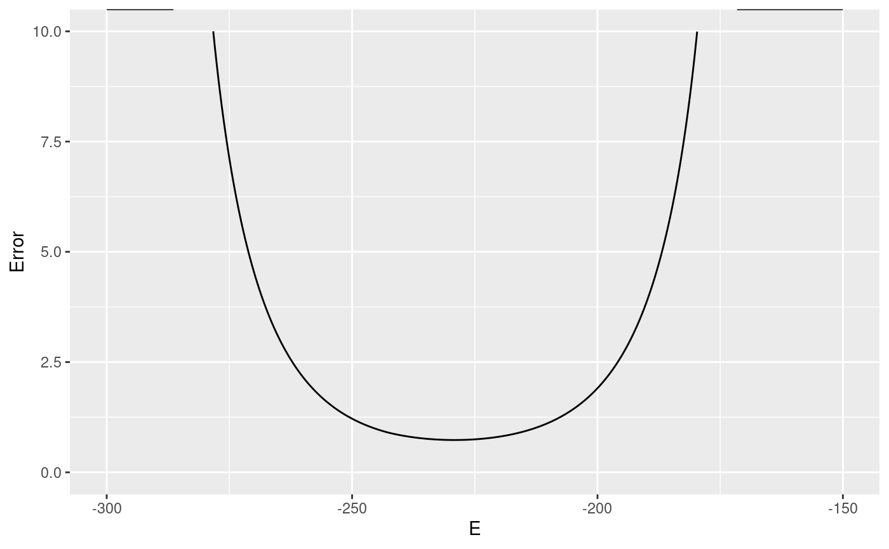
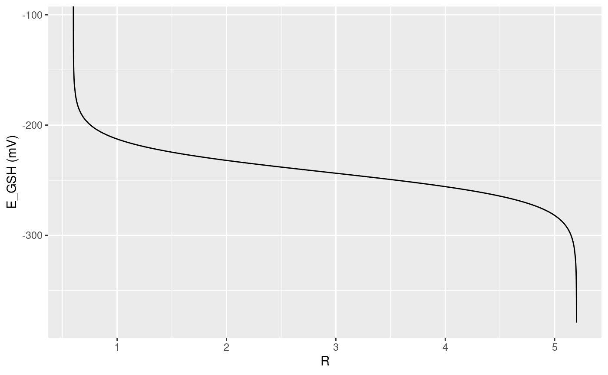
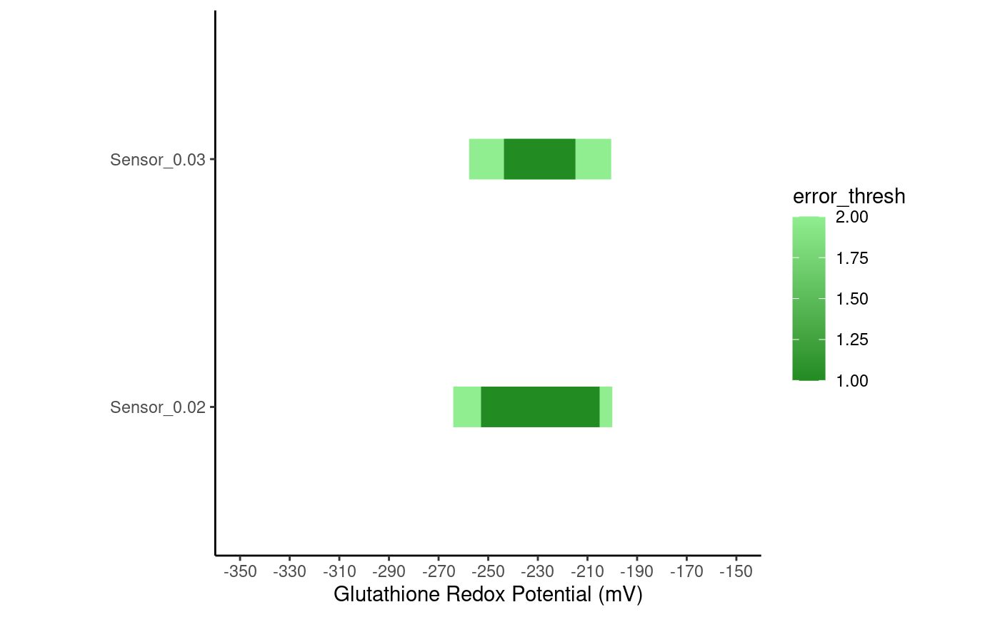

SensorOverlord_Walkthrough.RmdThis short tutorial is intended for microscopists who have:
A basic knowledge of R,
access to ratiometric images in their experimental system of interest, and
an interest in making accurate, quantitative measurements of \(E_{GSH}\), pH, or the concentration of a ligand.
The sensorOverlord package is available on GitHub. You can install it in R via the devtools package. To install the devtools package, run install.packages("devtools").
To install the most recent version of the sensorOverlord package from GitHub:
devtools::install_github("apfeldlab/sensoroverlord")
You can confirm your installation of sensorOverlord with packageVersion:
packageVersion("sensorOverlord") #> [1] '0.2.0'
To use the SensorOverlord framework, you need to have access to a midpoint potential for your sensor.
For redox sensors, the midpoint potential is \(E_0\). For pH sensors, the midpoint potential is \(pKa\). For ligand-binding sensors, the midpoint is \(pKd\).
The value of these midpoint potentials are almost always reported in the paper in which the sensor of interest was first published.
Note that, for ligand-binding sensors, papers often report \(Kd\). \(pKd = -log_{10}(Kd)\) so, to convert \(Kd\) to \(pKd\), use the log10 function:
kD <- 5*10e-6 pKd <- -log(kD)
sensorOverlord requires as input:
You can obtain these parameters in one of three ways:
Upload a digitized spectra. sensorOverlord can programatically obtain these input values from a digitized spectra.
Use a provided spectra. We have created a MongoDB database containing many the spectra of many published redox, pH, and ligand-binding sensors.
Provide the parameters directly. These parameters can be measured empirically, as explained in Romero 2014.
Option 1: Upload a digitized spectra
If you have excitation-emission spectra data for your each of your sensor’s two states, you can upload those into R.
For example, you could have a .csv file with three columns:
Oftentimes with digitized spectra, the \(\lambda\) values recorded in states A and B are not identical. In that case, you can use a .csv file with four columns:
spectra <- read.csv("my_spectra.csv")
Once you have uploaded your spectra, you can use the sensorOverlord::spectraMatrixFromValues function to create a Spectra object:
spectra_object <- spectraMatrixFromValues( lambdas_minimum = spectra$lambda, values_minimum = spectra$values_A, lambdas_maximum = spectra$lambda, values_maximum = spectra$values_B )
or
spectra_object <- spectraMatrixFromValues( lambdas_minimum = spectra$lambda_A, values_minimum = spectra$values_A, lambdas_maximum = spectra$lambda_B, values_maximum = spectra$values_B )
You can use the newSensorFromSpectra() function to turn the spectra object into a sensor object at a certain ratiometric wavelength pair:
sensor_object <- newSensorFromSpectra(spectra_object, c(510, 520), c(455, 465))
That sensor object will now contain estimates for the three required parameters:
Ra <- sensor_object@Rmin Rb <- sensor_object@Rmax delta2 <- sensor_object@delta
Option 2: Use a Provided Spectra
You can access all sensor information from the database with sensorOverlord::getDb()$find(), which accepts JSON search queries. For more information, see the “Accessing and Manipulating the Database” vignette. For example:
deGFP1_information <- getDb()$find('{"sensor_name" : "deGFP1"}') print(deGFP1_information$sensor_readout) #> [[1]] #> [1] "emission ratiometric" print(deGFP1_information$sensor_midpoint) #> [[1]] #> [1] 8.02 print(deGFP1_information$lambda1_recommended) #> [1] 515 print(deGFP1_information$lambda2_recommended) #> [1] 460
The actual spectra information is in a list form, so you can use the apply and unlist functions to obtain the spectra:
library(data.table) deGFP1_spectra_information <- data.table( apply( deGFP1_information[c("lambda_min", "values_min", "lambda_max", "values_max")], 2, function(x) unlist(x)) )
Then, you can follow the same instructions as if you had provided the spectra yourself: create a spectra object, then a sensor object at a specific wavelength pair, and then extract the relevant parameters:
deGFP_spectra <- spectraMatrixFromValues(deGFP1_spectra_information$lambda_min, deGFP1_spectra_information$values_min, deGFP1_spectra_information$lambda_max, deGFP1_spectra_information$values_max) sensor_object <- newSensorFromSpectra(deGFP_spectra, c(510, 520), c(455, 465)) Ra <- sensor_object@Rmin Rb <- sensor_object@Rmax delta2 <- sensor_object@delta print(Ra) #> [1] 0.3330232 print(Rb) #> [1] 0.6447556 print(delta2) #> [1] 0.9611258
Option 3: Provide Parameters Directly
If you conducted the appropriate microscopy experiments, you may have also obtained exact values of \(R_a\), \(R_b\), and \(\delta_{\lambda2}\).
If that’s the case, you can use them to directly make a sensor object:
R_reduced <- 0.6 R_oxidized <- 5.2 delta2 <- 0.171 sensor_object <- new( "Sensor", Rmax = R_reduced, Rmin = R_oxidized, delta = delta2 )
In order to use the SensorOverlord framework, you need to have an estimate of the variability of your measurement of \(R\) in your system of interest.
There are various ways to accomplish this, as we detail in the Supplementary Information of the associated manuscript.
For example, you can simply plot the \(R\) values that you observed in a previous experiment in which you expected the \(R\) value to stay constant over some period of time. Then, you can estimate your error in \(R\) by looking at the standard error over that period.
In C. elegans, we find that the error is constant, but relative to the \(R\) value.
SensorOverlord can accommodate any error model that you find in your system. For example:
# Relative error of 2.8%, or 0.028*R error_relative <- function(x) x*0.028 # Absolute error of +/- 0.028 error_absolute <- function(x) 0.028 # Quadratic error error_other <- function(x) 0.0001 * x^2 + 0.028*x + 0.5
For more information about incorporating different error models, see the “Customizing Error Model” vignette. For now, this tutorial will assume that you are using a relative error.
After completing the pre-requisites, you should have access to a sensor object and an error model. E.g.
sensor_object <- new( "Sensor", Rmax = R_reduced, Rmin = R_oxidized, delta = delta2 ) my_error <- function(x) x*0.028
`
First, you’ll need to turn your generic sensor object into a specific redox, pH, or ligand-binding sensor. For example:
redox_sensor_object <- new( "redoxSensor", sensor_object, e0 = -265 )
Then, you can use the error_df() method, defined on redoxSensor, pHSensor, and ligandSensor objects, to get a table of the inaccuracy of the sensor at different values of redox potential, pH, or p[Ligand].
redox_sensor_error <- error_df( redox_sensor_object, c(0.028), Emin = -300, Emax = -150 ) summary(redox_sensor_error) #> E Error Inaccuracy Rmin #> Min. :-300.0 Min. : 0.7329 Length:15001 Length:15001 #> 1st Qu.:-262.5 1st Qu.: 1.1032 Class :character Class :character #> Median :-225.0 Median : 3.4355 Mode :character Mode :character #> Mean :-225.0 Mean : Inf #> 3rd Qu.:-187.5 3rd Qu.:31.3965 #> Max. :-150.0 Max. : Inf #> Rmax Name #> Length:15001 Length:15001 #> Class :character Class :character #> Mode :character Mode :character #> #> #>

For more information, see ?error_df,redoxSensor-method, or the method for your type of sensor.
You can export that table directly, or use it for further analysis.
sensorOverlord can also compute the ranges of redox potential, pH, or ligand concentration that a sensor can measure to different accuracy thresholds:
# The redox potentials this sensor can measure, with an error in R of # 2% or 3%, to an accuracy of 1mV or 2mV accurate_ranges <- ranges_df(redox_sensor_object, inaccuracies = c(0.02, 0.03), thresholds = c(1, 2)) accurate_ranges #> Sensor_Name Minimum Maximum Inaccuracy error_thresh #> 1 Sensor_0.02 -252.89 -205.11 0.02 1 #> 2 Sensor_0.02 -264.09 -200.00 0.02 2 #> 3 Sensor_0.03 -243.66 -214.85 0.03 1 #> 4 Sensor_0.03 -257.68 -200.44 0.03 2
sensorOverlord also provides some default plotting methods that work for all sensor objects.
plotProperty will plot \(R\) vs the property of interest For example, for redox sensors, this will be \(R\) vs \(E_{GSH}\), the fraction of sensors in the oxidized state.
plotProperty(redox_sensor_object) #> Warning in log((object@delta * object@Rmax - object@delta * R)/(R - #> object@Rmin)): NaNs produced #> Warning: Removed 1 row(s) containing missing values (geom_path).

rangePlot will plot the range of values a sensor can measure to a certain accuracy.
rangePlot(redox_sensor_object, ranges = accurate_ranges)

In the plot above, notice how the range of values the sensor can measure accurately expands when the error in R is 2% (“Sensor_0.02”) versus when the error in 3% (“Sensor_0.03”).
For more information on plotting methods, see the “Sensor Methods” section in the documentation reference.